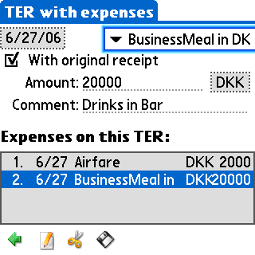

User Guide |
After installation of the Trams for Palm OS program you will find the application in the Unfiled category on your handheld - the application is named Trams. Move the application to whatever category you like.
Launch Trams.
On the Main form you have a list of TERs. Open TERs are shown prefixed with a dot. TERs without expenses are shown in bold face. A locked TER cannot changed.
On the Edit form you can rename the TER or change the status of the TER from locked to unlocked. A locked TER cannot be changed and will not be transferred during HotSync.

On the Expenses form you add or change expenses. The four icons on the bottom on the form are (from left to right):
When done entering expenses tap the Back button to go back.
If you open a locked TER most of the buttons are missing. You can still change values but you cannot save the expenses.
When done viewing expenses tap the Back button to go back.
For some of the Expense Category types the comment field is mandatory. To always add a default comment (such as a dot :-) go to the Preferences form accessible from the menu on the Main form:
Check the Set Mandatory Comment box and enter the default comment to use in the field, then tap OK.